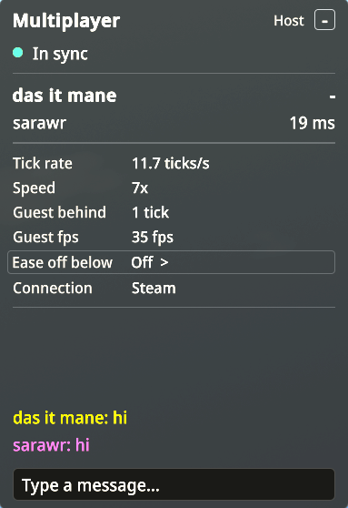

BeaverBuddiesStability Fork
Build one Timberborn colony together, in real time.
A fork of thomaswp's BeaverBuddies. Everyone plays the same colony, each with their own camera. This fork adds Steam friend invites, a connection panel with chat, your friends' cursors and a long list of crash and desync fixes.
Replaces the Workshop BeaverBuddies. The two can't be installed together, so unsubscribe from the Workshop one first. Every player needs the same download of this fork.
1.1.15 has been played and works. It is a bug-fix release on top of 1.1.13, the last release with new features, and 464 automated checks pass.
This fork is feature-complete: it gets fixes and updates for new Timberborn versions. New features go into Timber Together, which can also give each player a colony of their own.
Playing together takes three steps
No router settings, no virtual networks. If you both have Timberborn on Steam, you are a few clicks away.
-
Everyone installs the mod
Every player installs the same download and runs the same game version. Install guide
-
The host invites a friend
Load game → pick a save → Host co-op game. Choose Invite Friends and pick your friend in Steam's overlay.
-
Your friend joins, you start
When your friend appears in the list, the host chooses Start Game. Everyone builds in the same colony.
What you get
Everything the original BeaverBuddies does, plus what a long co-op session needs.
Steam friend invites
Invite a friend from Steam's overlay: no Hamachi, no port forwarding. Direct IP works too.
A connection panel
Who is connected, each ping, whether you're in sync, and the tick rate. Below it, a chat box and a speed boost for everyone. Collapse it to one line or hide it.
See your teammates
Their cursors with names, selection outlines, and Viewing / Editing labels on buildings. Restyle each cursor in Player cursors.
Fewer crashes and desyncs
Fixes for water, animation, random-number, saving, demolition and input problems that crashed sessions or knocked them out of sync. Each one, and how sure we are.
Problems are explained
A different build is refused before the save is sent, and a warning lists any mods that differ. A failed connection or action ends with a plain reason, not a silent hang.
Quicker and lighter
A guest's actions reach the host about 0.3 seconds sooner at normal speed. Over Steam the ping stays low at any game speed.
Skip the port forwarding
Choose Invite Friends and your friend gets a normal Steam invitation. If their game is closed, Steam launches it and joins for them.
Confirmed Working in real playtests between the maintainer and a friend.
- Friends only. The host accepts players from its friends-only Steam lobby only. A stranger who knows your Steam ID can't connect.
- Your address stays private. Steam connects you directly when it can and relays otherwise. Valve documents that relaying keeps players' IP addresses hidden from each other.
- Direct IP still works. Hamachi and port forwarding work alongside Steam invites. A Steam problem never stops you hosting over direct IP.
- Clear errors. If a connection fails, you get Steam's own reason in plain words, and in the log.
Both players need to be online in Steam and to own Timberborn on Steam.
Know how your session is doing
A small panel in a corner of your screen during multiplayer games. It only reads, so it can't change the game.

| Status | What it means |
|---|---|
| In sync | Normal. Everything is running together. |
| Catching up | Guests only: your game is a few ticks behind the host. |
| Waiting for host | Guests only: nothing has arrived from the host for a moment. |
| Connection unstable | Someone has stopped responding for five seconds. |
| Out of sync | A desync was detected. |
| Disconnected | The session has ended. |
- Each player is a name and a ping, host first. Your own row is bold, with a dash instead of a ping.
- Ping is the round trip to that player. It is normal text up to 80 ms, yellow up to 160 ms, and red above that or with no response.
- The dot is green in sync, yellow while catching up or waiting for the host, and red otherwise.
- Tick rate and speed show how fast the game really runs. Guests also see how many ticks they are behind the host (0 or 1 is normal).
- Connection shows Direct or Steam.
- The host also sees the slowest guest's lag and guest frame rate. Ease off below slows the game a little while a guest stays under a frame rate you pick (Off, 20, 30, 45 or 60 fps).
- A chat box sits below the panel. Everyone sees the same conversation, and a player who joins later gets the history. Each name shows in that player's cursor color.
- Click the title to collapse it to one line. Your choice is remembered.
- Hide it or move it to any corner in Mod Settings, or bind the optional Toggle connection panel key.
See what your teammates are doing
Other players' cursors, selections and building edits show up on your screen, so you stop building on top of each other.
- Cursors are colored and translucent, with a name. Each player starts with a color of their own (the host orange, then blue, green, pink, purple, teal, red and lime), and you can change any of them. They follow the map, wherever your camera is.
- Selection outlines use the game's own outline in that player's color.
- Viewing / Editing labels appear on buildings. They're a notice, not a lock: both players can still change a building.
Make each cursor your own
In a co-op game, press Esc and choose Player cursors. Each connected player gets a card:
| Control | Range | Default |
|---|---|---|
| Color | Their color, 10 presets, or exact RGB | Their color |
| Size | 50% to 300% | 100% |
| Transparency | 0% to 90% | 50% |
These choices stay on your computer and can't affect the game. They're remembered by player name.
The first card, You, in the chat, sets the color of your own name in the chat, on your screen only.
Stability work, and how sure we are of it
Confirmed means it was checked in a real multiplayer game. Tested means automated checks cover it, but the exact situation it fixes hasn't been set up on purpose in a real game.
Confirmed in play Confirmed · 4
- Water follows the simulation, not the frame rate
Players at different frame rates see the same water. This resolved a reported "badtide" desync.
- Animation crash fixed
A path cursor that moves backward between ticks, or a visual position that isn't a finite number, can't crash the game.
- The ping stays low at a high game speed
Over Steam the ping doesn't grow with the game speed. At a true speed 7 it stayed under 100 ms in play.
- Controls work after a disconnect
After a desync, a failed action or a lost connection, the menu and controls keep working.
Covered by checks Tested · 12
- Builds are checked before the save is sent
The game version and the exact mod build are compared first, with a time limit and a clear message.
- A failed action stops safely
If a multiplayer action fails, the session pauses and every player is told, so two games can't quietly drift apart.
- Random numbers, saving and water sources match
They behave the same on every computer, even after an error.
- Demolition fixes
Demolishing a selection that includes already-demolished buildings doesn't end the session. Equally distant demolition jobs are picked the same way on every computer.
- The host can ease off for a slow guest
The host picks a frame rate floor. While a guest stays below it, the game slows a little and speeds back up by itself. It never changes what happens in a tick.
- More ways out of sync closed
Planting marks the same tiles whatever layer each player's view is sliced to. A player hovering a path that would join two districts doesn't make their computer refuse a building. Tick once and dev mode's Ctrl keys can't change one computer only. Joining closes at the first change or the first tick, so a late joiner can't miss anything.
- A fuller desync check
Guests compare all of the host's random-number state, and every tick the entities and where each walker stands. The log names the first difference, so a report shows when the games went apart.
- A safer network reader
A received message can only create multiplayer actions and their values. A guest that gets an action it can't read, for example from a mod only the host has, leaves with a message naming it, and the others play on.
- Wonders on the tick
The Earth Repopulator's plane launch and every Wonder's animation advance once per tick in co-op, the same for everyone. If a game update breaks this, the Wonders fall back to frame time and every other fix stays.
- One lost link, not a frozen game
A direct (IP) player whose connection dies is dropped after 30 seconds, as over Steam, and the others play on. Something deleted in a tick is gone at once for everyone, and a building from a mod only one player has doesn't stop the game.
- Pump, valve and dev generator controls are shared
A pump's flow rate, a throttling valve's limit, and the dev power generator's strength and flip change on the same tick for every player.
- Unlocks, logging and long sessions
Two players unlocking the same building at once pay once, and an unlock the science can't cover is skipped. Turning on detailed logging mid-game doesn't read as a desync. A guest joining after Save and Rehost gets that session's speed boost, and a long session doesn't keep old menus and games in memory.
Every change, with its status, is in the changelog.
How it works, in one minute
Timberborn is a single-player game, so BeaverBuddies keeps every player's copy of the game identical instead of streaming one game to everyone.
- Everyone starts from the same save. The host sends the save when a friend joins.
- Every action is mirrored. Building, changing a recipe or setting a priority is sent to the host, which decides which tick it happens on and sends it to everyone.
- The game is deterministic. Given the same save and the same actions on the same ticks, every copy of the game plays out exactly the same.
That is why every player must run the same build, why other mods should match, and why nobody can join once the game is running. When something breaks that sameness, that is a desync. The original project's wiki explains the design in more detail.
Good to know before you play
- Every player installs the same download and runs the same game version. A different build is refused when someone joins.
- Other mods should match. When someone joins, both players are warned about any mods that differ. A guest missing a mod whose actions the host sends (MixedStorage, for example) leaves the game, and the others play on. Settings aren't compared, so keep the ones that affect the simulation the same.
- Join before the host unpauses. After that, or once anything is built or marked, nobody else can join.
- Desyncs can still happen. This fork removes known causes but can't promise none. Keep backups of your saves.
- Tested with two players on Windows and Steam. Larger groups and other platforms haven't been tried.
- One BeaverBuddies at a time. Remove the Workshop BeaverBuddies, and don't enable Timber Together alongside this fork.
More answers are in the FAQ, and Troubleshooting covers what to do when something goes wrong.
One download, every player
Everyone installs the same zip, the host loads a save, and the invite goes out through Steam.